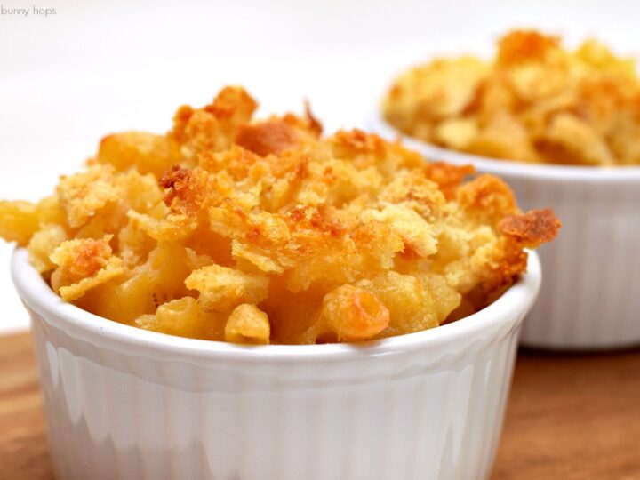

Mac and Cheese

Description
Ingredients
- A Box of Macoroni
- Butter
- Flour
- Milk
- Cheddar Cheese
- Parmesan Cheese
- Salt
- Pepper
- Paprika Powder
- Bread Crumbs
Steps
- Boil the Macoroni in salted water
- Drain and transfer the Macoroni into a baking dish
- Melt Butter and whisk in the flour
- Whisk in the milk, bring it to a simmer
- Stir in the cheese
- Season with salt and pepper
- Continue simmering until the sauce is thick
- Pour the sauce over the Macoroni
- Melt two table spoons of butter in a skillet
- Add bread crumbs to it and toast until brown
- Spread the crumbs over the mac and cheese
- Sprinkle paprika all over
- Bake until golden brown
- Enjoy.